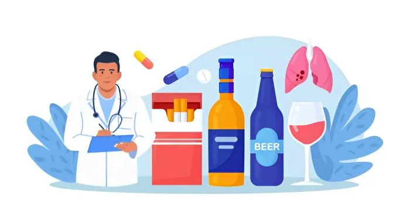
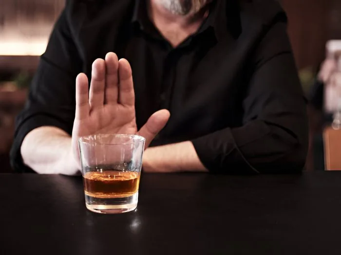

It is very common to see people struggling with many things while they recover from addiction. From mental, physical to emotional constraints, they are in a space where they need constant support and understanding from everyone around them. It takes stability, knowledge, patience and essential education to support a person in recovery.
Today, Dr. Gorav Gupta, a psychiatrist for alcohol addiction shares his expertise and knowledge with people who want to support their loved ones in the journey of recovery.
- Be their rock and mental support – It can not be an easy task as caregivers to understand what actually ails the mind and body of your loved one, especially when you have not been in that condition before. Even when they are in phases of addiction, or sober enough to know the right and wrongs- a caregiver should maintain the image of a person they can always rely on and be trusted. It will not be easy, but it is necessary in every situation. If they need additional support and would love to learn more about such support, they can visit different self help and educational groups like Alcoholics Anonymous.
- Tough love: Difficult but essential -Tough love- it is oftentimes a controversial topic of discussion, but a very necessary step required for the well being of our cherished kin. When we see them struggling, fighting with the urges of alcohol addiction, it is emotionally damaging for us on many levels. But this is where we have to maintain our composure and establish boundaries that are not meant to be broken. Those moments of weakness may result in relapse behaviors and put all progress down the drain. Maintaining these boundaries and strictness towards such behaviors is essential from caregivers.
- Openly discussing rehab and detox – Discussing the process of rehab and detox is essential to approach a dignified and standardized way of bouncing back into one’s daily life and well being. If a person is not able to handle the problems caused by their alcohol addiction in their natural setting, they should be encouraged to approach an expert like Dr. Gorav Gupta, who is a known psychiatrist for alcohol addiction. With expert guidance and personalized plans, the person will be able to achieve the desired change in their life within a limited time frame.
- Celebrate small wins – Every single day in recovery is a step towards success. Many of us fail to realize that what is easy for us, is a proud achievement for people recovering from alcohol addiction. They may not be cured just the next day, but it does mean a step towards recovery. Celebrating small wins acts like a dose of achievement for such people.- pushing them to be positive towards their journey and understanding that their loved ones care for them and cherish them in every situation.
- Encourage professional therapy – Professional therapy acts as a catalyst in speeding up the recovery process. It promotes a long-term vision to recovery and encourages people to stay on the course to living a long life. Professionals are trained to address the root causes of these problems through regular sessions and understanding where the problem started. When the client starts to gain insight on their journey, they can set a goal and work towards ensuring their well being.
- Remove bad influences – The power of the environment and influence is immense. A positive environment works wonders, while a negative one can send someone spiraling down the path of toxicity and maladaptive behaviors. As the saying goes, ‘ one bad apple spoils the bunch’, similarly any bad influence or situation is enough to set a person back on the path of relapse. It is essential to ensure that such people prioritize themselves, realize the importance of an uplifting environment and work on separating themselves from the ‘spoilt bunch’
- Building a stable and healthy environment – Engaging in positive activities like hobbies, yogic practices and meditation are a definite way of building a stable and healthy environment for your loved ones. They need to appreciate and indulge in small activities that will make them happy and give them that ‘serotonin boost’. Although it is not easy to maintain this on a daily basis, it takes a conscious effort on the part of caregivers to put their best and most positive foot forward. Self-care and stability are the pillars of ensuring that one is approaching recovery in the best way.
What are the statistics for alcohol addiction in India?
According to various resources, the average rate of alcohol use disorders amongst Indians is at 12.5%. This number comes from many studies and meta-analysis performed on new studies over the years. This number is highly alarming- even when Indians are amongst the lowest consumers of alcohol in the world.

Looking for help? We’re here to assist.
The journey of seeking help for alcohol addiction may be frightening, but it does not necessarily have to be a terrible experience. With a proper guidance and treatment plan, the lives of the people you care for can be transformed in a matter of days.
If you or someone you love is struggling with alcohol addiction, it’s time to take the first step toward a healthier, happier life. Seeking treatment can be the turning point you need to reclaim your future and find the support you deserve. Don’t let fear and shame claim your life—reach out for help today. Whether it’s talking to a friend, contacting a professional, or exploring resources, remember that you’re not alone in this journey. Explore treatment options and resources that resonate with your needs and personal preferences. Remember, the first step is often the hardest, but it’s also the most important. You have the power to change your life, and seeking help is a courageous act.
Take action now; your path to recovery starts with a single step. Visit our resources page to find support tailored to your needs. To connect with us for a consultation, visit Best Psychiatrist in Delhi today..